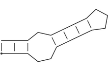

RNA Structures
Here, we describe the different notations and representations of RNA secondary structures used throughout our library and prediction tools.
Dot-Bracket Notation
The Dot-Bracket notation as introduced already in the early times of the ViennaRNA Package
denotes base pairs by matching pairs of parenthesis () and unpaired nucleotides by dots
..
Note
This is the standard representation of a secondary structure in our library.
Based on that notation, more elaborate representations have been developed to include additional information, such as the loop context a nucleotide belongs to and to annotated pseudo-knots.
Consider the following secondary structure in dot-bracket notation:
(((..((((...)))).)))
which, drawn as a secondary structure graph, looks like:
It is a stem-loop structure consisting of a an outer helix of 3 base pairs followed by an interior loop of size 3, a second helix of length 4, and a hairpin loop of size 3.
Pseudo Dot-Bracket Notation
Base pair probabilities are sometimes summarized in pseudo dot-bracket notation with
the additional symbols ,, |, {, }. Here, the usual (, ), .,
represent bases with a strong preference (more than 2/3) to pair upstream (with a partner
further 3’), pair down-stream, or do not pair, respectively. {, }, and , are
just the weaker version of the above and | represents a base that is mostly paired
but has pairing partners both upstream and downstream. In this case opening and closing
brackets do not need to match.
Extended Dot-Bracket Notation
A more generalized version of the original Dot-Bracket notation may use additional pairs
of brackets, such as <>, {}, and [], and matching pairs of
uppercase/lowercase letters. This allows for anotating pseudo-knots, since different
pairs of brackets are not required to be nested.
The follwing annotations of a simple structure with two crossing helices of size 4 are equivalent:
<<<<[[[[....>>>>]]]]
((((AAAA....))))aaaa
AAAA{{{{....aaaa}}}}
WUSS notation
The Washington University Secondary Structure (WUSS) notation is frequently used for consensus secondary structures, e.g. in Stockholm 1.0 format
This notation allows for a fine-grained annotation of base pairs and unpaired nucleotides, including pseudo-knots.
See also…
WUSS notation in the infernal user guide at http://eddylab.org/infernal/Userguide.pdf
Below, you’ll find a list of secondary structure elements and their corresponding WUSS annotation.
Base pairs
Nested base pairs are annotated by matching pairs of the symbols
<>,(),{}, and[]. Each of the matching pairs of parenthesis have their special meaning, however, when used as input in our programs, e.g. structure constraint, these details are usually ignored. Furthermore, base pairs that constitute as pseudo-knot are denoted by letters from the latin alphabet and are, if not denoted otherwise, ignored entirely in our programs.Hairpin loops
Unpaired nucleotides that constitute the hairpin loop are indicated by underscores,
_. Here is an example:<<<<<_____>>>>>
Bulges and interior loops
Residues that constitute a bulge or interior loop are denoted by dashes,
-:(((--<<_____>>-)))
Multibranch loops
Unpaired nucleotides in multibranch loops are indicated by commas
,:(((,,<<_____>>,<<____>>)))
External residues
Single stranded nucleotides in the exterior loop, i.e. not enclosed by any other pair are denoted by colons,
::<<<____>>>:::
Insertions
In cases where an alignment represents the consensus with a known structure, insertions relative to the known structure are denoted by periods,
.. Regions where local structural alignment was invoked, leaving regions of both target and query sequence unaligned, are indicated by tildes,~.These symbols only appear in alignments of a known (query) structure annotation to a target sequence of unknown structure.
Pseudo-knots
The WUSS notation allows for annotation of pseudo-knots using pairs of upper-case/lower-case letters. Our programs and library functions usually ignore pseudo-knots entirely treating them as unpaired nucleotides, if not stated otherwise:
<<<_AAA___>>>aaa
See also…
Abstract Shapes
Abstract Shapes, introduced by Giegerich et al. [2004], collapse the secondary structure while retaining the nestedness of helices and hairpin loops.
The abstract shapes representation abstracts the structure from individual base pairs and their corresponding location in the sequence, while retaining the inherent nestedness of helices and hairpin loops.
Below is a description of what is included in the abstract shapes abstraction for each respective level together with an example structure:
CGUCUUAAACUCAUCACCGUGUGGAGCUGCGACCCUUCCCUAGAUUCGAAGACGAG
((((((...(((..(((...))))))...(((..((.....))..)))))))))..
Shape Level |
Description |
Result |
|---|---|---|
1 |
Most accurate - all loops and all unpaired |
|
2 |
Nesting pattern for all loop types and unpaired regions in external loop and multiloop |
|
3 |
Nesting pattern for all loop types but no unpaired regions |
|
4 |
Helix nesting pattern in external loop and multiloop |
|
5 |
Most abstract - helix nesting pattern and no unpaired regions |
|
Note
Our implementations also provide the special Shape Level 0, which does not collapse any structural features but simply convert base pairs and unpaired nucleotides into their corresponding set of symbols for abstract shapes.
See also…
Tree Representations
Secondary structures can be readily represented as trees, where internal nodes represent base pairs, and leaves represent unpaired nucleotides. The dot-bracket structure string already is a tree represented by a string of parenthesis (base pairs) and dots for the leaf nodes (unpaired nucleotides).
Alternatively, one may find representations with two types of node labels,
P for paired and U for unpaired; a dot is then replaced by (U), and
each closed bracket is assigned an additional identifier P.
We call this the expanded notation. In Fontana et al. [1993] a condensed
representation of the secondary structure is proposed, the so-called
homeomorphically irreducible tree (HIT) representation. Here a stack is
represented as a single pair of matching brackets labeled P and
weighted by the number of base pairs. Correspondingly, a contiguous
strain of unpaired bases is shown as one pair of matching brackets
labeled U and weighted by its length. Generally any string consisting
of matching brackets and identifiers is equivalent to a plane tree with
as many different types of nodes as there are identifiers.
Shapiro [1988] proposed a coarse grained representation which does not retain the full information of the secondary structure. He represents the different structure elements by single matching brackets and labels them as
H(hairpin loop),I(interior loop),B(bulge),M(multi-loop), andS(stack).
We extend his alphabet by an extra letter for external elements E.
Again these identifiers may be followed by a weight corresponding to the
number of unpaired bases or base pairs in the structure element. All tree
representations (except for the dot-bracket form) can be encapsulated into
a virtual root (labeled R).
The following example illustrates the different linear tree representations used by the package:
Consider the secondary structure represented by the dot-bracket string (full tree):
.((..(((...)))..((..)))).
which is the most convenient condensed notation used by our programs and library functions.
Then, the following tree representations are equivalent:
Expanded tree:
((U)(((U)(U)((((U)(U)(U)P)P)P)(U)(U)(((U)(U)P)P)P)P)(U)R)
HIT representation ([Fontana et al., 1993]):
((U1)((U2)((U3)P3)(U2)((U2)P2)P2)(U1)R)
Coarse Grained Tree Representation ([Shapiro, 1988]):
Short (with root node
R, without stem nodesS):((H)((H)M)R)
Full (with root node R`):
(((((H)S)((H)S)M)S)R)
Extended (with root node
R, with external nodesE):((((((H)S)((H)S)M)S)E)R)
Weighted (with root node
R, with external nodesE):((((((H3)S3)((H2)S2)M4)S2)E2)R)
The Expanded tree is rather clumsy and mostly included for the sake of completeness. The different versions of Coarse Grained Tree Representations are variatios of Shapiro’s linear tree notation.
For the output of aligned structures from string editing, different representations are needed, where we put the label on both sides. The above examples for tree representations would then look like:
a) (UU)(P(P(P(P(UU)(UU)(P(P(P(UU)(UU)(UU)P)P)P)(UU)(UU)(P(P(UU)(U...
b) (UU)(P2(P2(U2U2)(P2(U3U3)P3)(U2U2)(P2(U2U2)P2)P2)(UU)P2)(UU)
c) (B(M(HH)(HH)M)B)
(S(B(S(M(S(HH)S)(S(HH)S)M)S)B)S)
(E(S(B(S(M(S(HH)S)(S(HH)S)M)S)B)S)E)
d) (R(E2(S2(B1(S2(M4(S3(H3)S3)((H2)S2)M4)S2)B1)S2)E2)R)
Aligned structures additionally contain the gap character _.